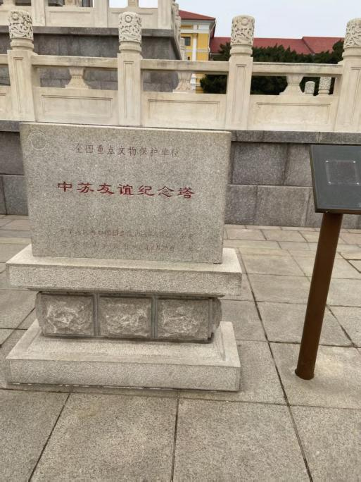

中苏友谊纪念塔，是为纪念苏联红军驻旅顺口部队和中国人民的深厚友谊而建的。其主体由汉白玉、大理石和花岗石所建造，塔基呈四方形，长宽各20米。两层花岗岩塔基四面皆可拾级而上。周围有雪花石栏杆环绕，栏头分别雕有盛开的牡丹和翱翔的和平鸽。
纪念塔于1957年2月正式落成，高22.2米，由塔基、塔身和塔顶三部分组成。塔基用花岗岩砌筑，呈正方形；塔身、塔额以及栏杆都是用雪花石精雕而成。塔身基座四面刻有天安门和克里姆林宫、鞍钢炼钢高炉、旅顺口风光以及表现农业丰收场景的浮雕。塔身下部雕有高1.2米的象征中苏友谊的群像，塔顶为雪花石雕刻的盛开莲花，顶端镶嵌中苏友谊徽。
纪念塔四周植有四季常青的“龙柏”，象征着中苏两国人民的友谊万古长存。
1961年，中苏友谊纪念塔被中华人民共和国国务院公布为第一批全国重点文物保护单位。2017年12月2日，中苏友谊纪念塔入选第二批中国20世纪建筑遗产名单。
 ← 返回大连地图